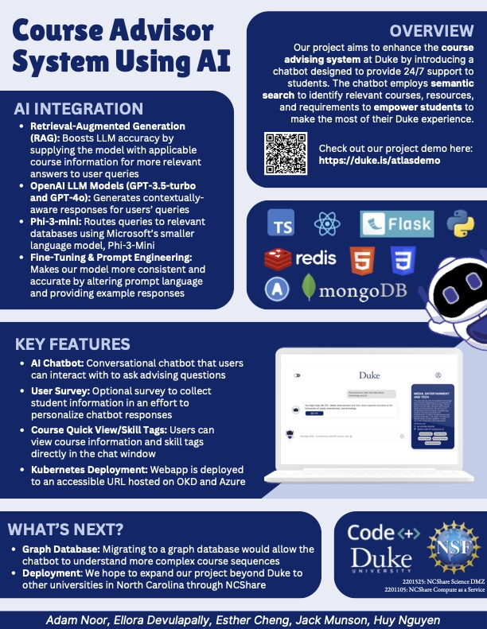
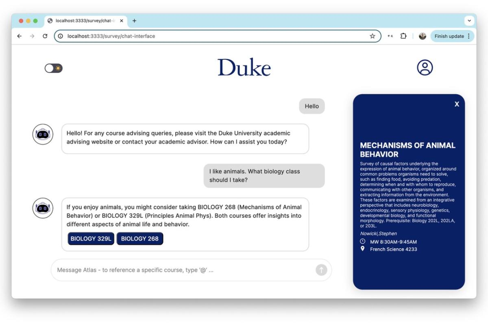
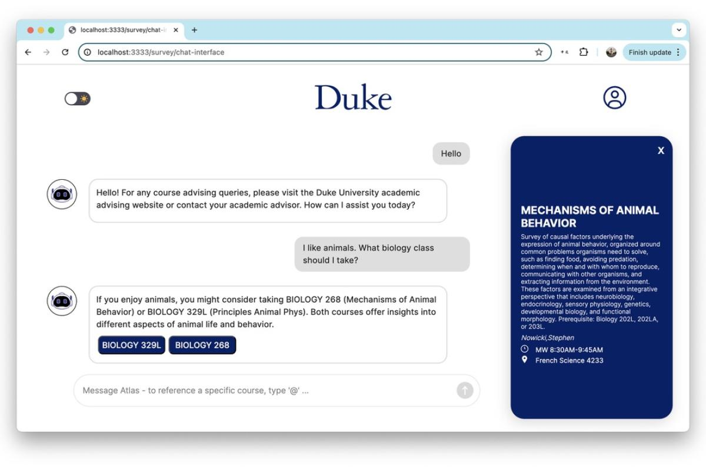
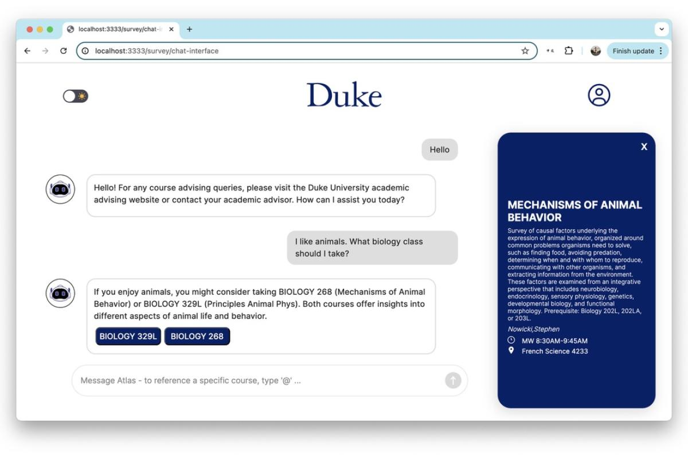

Overview
The Atlas Course Advisor System is a 24/7 AI-powered chatbot designed to assist students with course selection, requirements, and resources. Built using advanced language models and semantic search, the system enhances academic advising at Duke University.
Type: Deployed Academic App
Date: 2024
Location: Durham, North Carolina
Key Features
- AI Chatbot: A conversational assistant for advising questions.
- Personalization: User surveys to tailor responses.
- Quick View: In-chat course details and skill tags.
- Kubernetes Deployment: Hosted on OKD and Azure.
Gallery

 


Sponsors
Sponsored by Duke University, NCShare, and the National Science Foundation.
- NSF Grant 2201525: NCShare Science DMZ
- NSF Grant 2201105: NCShare Compute as a Service